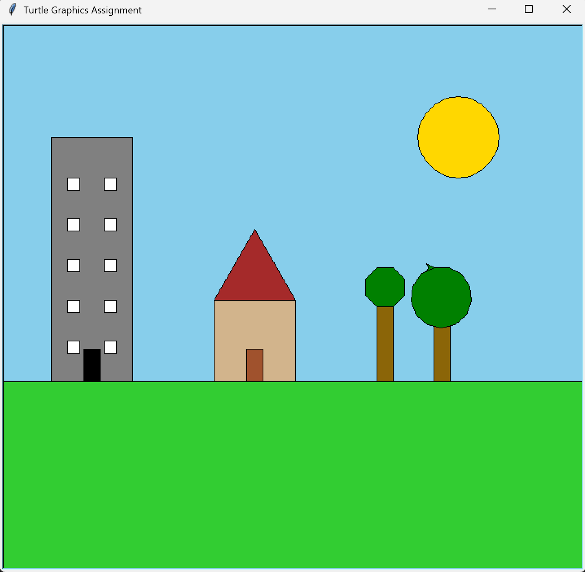

Computer Science – Turtle Graphics
← Back to HomeThis project focused on using functions to organize code and create a detailed turtle graphics scene. I used Python’s turtle and math libraries to draw buildings, trees, grass, and a sun using reusable shape functions. This helped me understand how functions make code cleaner and more efficient.
import turtle
import math
def setup_turtle():
t = turtle.Turtle()
t.speed(0)
screen = turtle.Screen()
screen.title("Turtle Graphics Assignment")
return t, screen
def draw_rectangle(t, width, height, fill_color=None):
if fill_color:
t.fillcolor(fill_color)
t.begin_fill()
for _ in range(2):
t.forward(width)
t.left(90)
t.forward(height)
t.left(90)
if fill_color:
t.end_fill()
def draw_square(t, size, fill_color=None):
if fill_color:
t.fillcolor(fill_color)
t.begin_fill()
for _ in range(4):
t.forward(size)
t.right(90)
if fill_color:
t.end_fill()
def draw_triangle(t, size, fill_color=None):
if fill_color:
t.fillcolor(fill_color)
t.begin_fill()
for _ in range(3):
t.forward(size)
t.left(120)
if fill_color:
t.end_fill()
def draw_circle(t, radius, fill_color=None):
if fill_color:
t.fillcolor(fill_color)
t.begin_fill()
t.circle(radius)
if fill_color:
t.end_fill()
def draw_polygon(t, sides, size, fill_color=None):
if fill_color:
t.fillcolor(fill_color)
t.begin_fill()
angle = 360 / sides
for _ in range(sides):
t.forward(size)
t.right(angle)
if fill_color:
t.end_fill()
def jump_to(t, x, y):
t.penup()
t.goto(x, y)
t.pendown()
def draw_scene(t):
screen = t.getscreen()
screen.bgcolor("skyblue")
jump_to(t, -400, -400)
draw_rectangle(t, 800, 300, "limegreen")
jump_to(t, -100, 0)
draw_square(t, 100, "tan")
jump_to(t, -300, -100)
draw_rectangle(t, 100, 300, "gray")
jump_to(t, -100, 0)
draw_triangle(t, 100, "brown")
jump_to(t, -60, -100)
draw_rectangle(t, 20, 40, "sienna")
jump_to(t, 200, 150)
draw_circle(t, 50, "gold")
jump_to(t, 100, -100)
draw_rectangle(t, 20, 100, "darkgoldenrod4")
jump_to(t, 100, 40)
draw_polygon(t, 8, 20, "green")
def main():
t, screen = setup_turtle()
draw_scene(t)
screen.mainloop()
main()
Here is the final image created by the turtle program:
